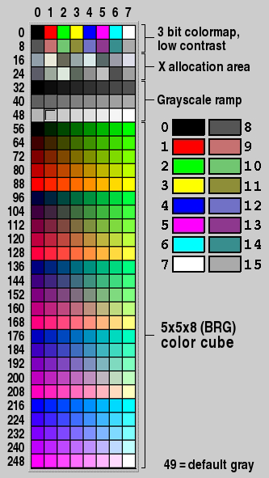

This chapter covers the drawing functions that are provided with FLTK.
When Can You Draw Things in FLTK?
There are only certain places you can execute FLTK code that draws to the computer's display. Calling these functions at other places will result in undefined behavior!
- The most common place is inside the virtual Fl_Widget::draw() method. To write code here, you must subclass one of the existing Fl_Widget classes and implement your own version of draw().
- You can also create custom boxtypes and labeltypes. These involve writing small procedures that can be called by existing Fl_Widget::draw() methods. These "types" are identified by an 8-bit index that is stored in the widget's
box(),labeltype(), and possibly other properties.
- You can call Fl_Window::make_current() to do incremental update of a widget. Use Fl_Widget::window() to find the window.
In contrast, code that draws to other drawing surfaces than the display (i.e., instances of derived classes of the Fl_Surface_Device class, except Fl_Display_Device, such as Fl_Printer and Fl_Copy_Surface) can be executed at any time as follows:
- Make your surface the new current drawing surface calling the Fl_Surface_Device::push_current(Fl_Surface_Device*) function.
- Make a series of calls to any of the drawing functions described below; these will operate on the new current drawing surface;
- Set the current drawing surface back to its previous state calling Fl_Surface_Device::pop_current().
What Units Do FLTK Functions Use?
Before version 1.4 all graphical quantities used by FLTK were in pixel units: a window of width 500 units was 500 pixels wide, a line of length 10 units was 10 pixels long, lines of text written using a 14-point font were 14 pixels below each other. This organization is not sufficient to support GUI apps that can be drawn on screens of varying pixel density, especially on High-DPI screens, because widgets become very small and text becomes unreadable.
FLTK version 1.4 introduces a new feature, a screen-specific scale factor which is a float number with a typical value in the 1-2.5 range and is used as follows: any graphical element with an FLTK value of v units is drawn on the screen with v * scale units. Thus, a window with width 500 units is 500*scale pixels wide, a line of length 10 units is 10*scale pixels long, lines of text written using a 14-point font are 14*scale pixels below each other. Consider a system with two screens, one with regular DPI and one with a twice higher DPI. If the first screen's scale factor is set to 1 and that of the second screen to 2, the GUI of any FLTK app appears equally sized on the two screens.
FLTK uses several units to measure graphical elements:
- All quantities used by the public FLTK API to measure graphical elements (e.g., window widths, line lengths, font sizes, clipping regions, image widths and heights) are in FLTK units except if it's explicitly documented another unit is used. FLTK units are both platform- and DPI-independent. An example of FLTK API using another unit is Fl_Gl_Window::pixel_w().
-
Just before drawing to a screen, the library internally multiplies all quantities expressed in FLTK units by the current value of the scale factor for the screen in use and obtains quantities in drawing units. The current scale factor value, for an Fl_Window named window, is given by
int nscreen = window->screen_num(); // the screen where window is mappedstatic float screen_scale(int n)Gets the GUI scaling factor of screen number n.Definition Fl.cxx:2364One drawing unit generally corresponds to one screen pixel ...
-
... but not on macOS and for retina displays, where one drawing unit corresponds to two pixels.
- ... and not with the Wayland platform, where one drawing unit may correspond to 1, 2, or 3 pixels according to the current value of the Wayland-defined, integer-valued scale factor.
At application start time, FLTK attempts to detect the adequate scale factor value for each screen of the system. Here is how that's done under the X11, Windows, and Wayland platforms. If the resulting scale factor is not satisfactory, and also under the macOS platform, it's possible to set the FLTK_SCALING_FACTOR environmental variable to the desired numerical value (e.g., 1.75) and any FLTK app will start scaled with that value. Furthermore, it's possible to change the scale factor value of any screen at run time with ctrl/+/-/0/ keystrokes which enlarge, shrink, and reset, respectively, all FLTK windows on a screen and their content. Under macOS, the corresponding GUI scaling shortcuts are cmd/+/-/0/.
GUI rescaling involves also image drawing: the screen area covered by the drawn image contains a number of pixels that grows with the scale factor. When FLTK draws images, it maps the image data (the size of these data is given by Fl_Image::data_w() and Fl_Image::data_h()) to the screen area whose size (in FLTK units) is given by Fl_Image::w() and Fl_Image::h(). How exactly such mapping is performed depends on the image type, the platform and some hardware features. The most common case for Fl_RGB_Image's is that FLTK uses a scaled drawing system feature that directly maps image data to screen pixels. An important feature of FLTK for image drawing is the Fl_Image::scale() member function, new in FLTK version 1.4. This function controls the image drawing size (in FLTK units, given by Fl_Image::w() and Fl_Image::h()) independently from the size of the image data (given by Fl_Image::data_w() and Fl_Image::data_h()). An image with large enough data size can thus be drawn at the full resolution of the screen even when the screen area covered by the image grows following the GUI scale factor.
The Fl_Image_Surface class is intended to create an Fl_RGB_Image from a series of FLTK drawing operations. The Fl_Image_Surface constructor allows to control whether the size in pixels of the resulting image matches the FLTK units used when performing drawing operations, or matches the number of pixels corresponding to these FLTK units given the current value of the scale factor. The first result is obtained with new Fl_Image_Surface(w, h), the second with new Fl_Image_Surface(w, h, 1).
When drawing to Fl_Printer or Fl_PostScript_File_Device, the drawing unit is initially one point, that is, 1/72 of an inch. This unit is changed by calls to Fl_Paged_Device::scale().
Drawing Functions
To use the drawing functions you must first include the <FL/fl_draw.H> header file. FLTK provides the following types of drawing functions:
- Boxes
- Clipping
- Colors
- Color Contrast
- Line Dashes and Thickness
- Drawing Fast Shapes
- Drawing Complex Shapes
- Drawing Text
- Fonts
- Character Encoding
- Drawing Overlays
- Drawing Images
- Direct Image Drawing
- Direct Image Reading
- Image Classes
- Offscreen Drawing
Boxes
FLTK provides three functions that can be used to draw boxes for buttons and other UI controls. Each function uses the supplied upper-lefthand corner and width and height to determine where to draw the box.
void fl_draw_box(Fl_Boxtype b, int x, int y, int w, int h, Fl_Color c)
- The
fl_draw_box() function draws a standard boxtypebin the specified colorc.
void fl_frame(const char *s, int x, int y, int w, int h)
void fl_frame2(const char *s, int x, int y, int w, int h)
- The
fl_frame() andfl_frame2() functions draw a series of line segments around the given box. The stringsmust contain groups of 4 letters which specify one of 24 standard grayscale values, where 'A' is black and 'X' is white. The results of calling these functions with a string that is not a multiple of 4 characters in length are undefined.
- The only difference between
fl_frame() andfl_frame2() is the order of the line segments:- For
fl_frame() the order of each set of 4 characters is: top, left, bottom, right. - For
fl_frame2() the order of each set of 4 characters is: bottom, right, top, left.
- For
- Note that fl_frame(Fl_Boxtype b) is described in the Box Types section.
Clipping
You can limit all your drawing to a rectangular region by calling fl_push_clip(), and put the drawings back by using fl_pop_clip(). This rectangle is measured in FLTK units and is unaffected by the current transformation matrix.
In addition, the system may provide clipping when updating windows which may be more complex than a simple rectangle.
void fl_push_clip(int x, int y, int w, int h)
void fl_clip(int x, int y, int w, int h)
- Intersect the current clip region with a rectangle and push this new region onto the stack.
- The
fl_clip() version is deprecated and will be removed from future releases.
void fl_push_no_clip()
- Pushes an empty clip region on the stack so nothing will be clipped.
void fl_pop_clip()
- Restore the previous clip region.
- Note: You must call
fl_pop_clip() once for every time you callfl_push_clip(). If you return to FLTK with the clip stack not empty unpredictable results occur.
int fl_not_clipped(int x, int y, int w, int h)
- Returns non-zero if any of the rectangle intersects the current clip region. If this returns 0 you don't have to draw the object.
- Note: Under X this returns 2 if the rectangle is partially clipped, and 1 if it is entirely inside the clip region.
int fl_clip_box(int x, int y, int w, int h, int &X, int &Y, int &W, int &H)
- Intersect the rectangle
x,y,w,hwith the current clip region and returns the bounding box of the result inX,Y,W,H. Returns non-zero if the resulting rectangle is different than the original. This can be used to limit the necessary drawing to a rectangle.WandHare set to zero if the rectangle is completely outside the region.
void fl_clip_region(Fl_Region r)
Fl_Region fl_clip_region()
- Replace the top of the clip stack with a clipping region of any shape. Fl_Region is an operating system specific type. The second form returns the current clipping region.
Colors
FLTK manages colors as 32-bit unsigned integers, encoded as RGBI. When the "RGB" bytes are non-zero, the value is treated as RGB. If these bytes are zero, the "I" byte will be used as an index into the colormap. Colors with both "RGB" set and an "I" >0 are reserved for special use.
Values from 0 to 255, i.e. the "I" index value, represent colors from the FLTK standard colormap and are allocated as needed on screens without TrueColor support. The Fl_Color enumeration type defines the standard colors and color cube for the first 256 colors. All of these are named with symbols in <FL/Enumerations.H>. Example:

Color values greater than 255 are treated as 24-bit RGB values. These are mapped to the closest color supported by the screen, either from one of the 256 colors in the FLTK colormap or a direct RGB value on TrueColor screens.
Fl_Color fl_rgb_color(uchar r, uchar g, uchar b)
Fl_Color fl_rgb_color(uchar grayscale)
- Generate Fl_Color out of specified 8-bit RGB values or one 8-bit grayscale value.
void fl_color(Fl_Color c)
void fl_color(int c)
- Sets the color for all subsequent drawing operations. Please use the first form: the second form is only provided for back compatibility.
- For colormapped displays, a color cell will be allocated out of
fl_colormapthe first time you use a color. If the colormap fills up then a least-squares algorithm is used to find the closest color.
- Returns the last color that was set using
fl_color(). This can be used for state save/restore.
void fl_color(uchar r, uchar g, uchar b)
- Set the color for all subsequent drawing operations. The closest possible match to the RGB color is used. The RGB color is used directly on TrueColor displays. For colormap visuals the nearest index in the gray ramp or color cube is used.
unsigned Fl::get_color(Fl_Color i)
void Fl::get_color(Fl_Color i, uchar &red, uchar &green, uchar &blue)
- Generate RGB values from a colormap index value
i. The first returns the RGB as a 32-bit unsigned integer, and the second decomposes the RGB into three 8-bit values.
Fl::get_system_colors()
Fl::foreground()
Fl::background()
Fl::background2()
- The first gets color values from the user preferences or the system, and the other routines are used to apply those values.
Fl::own_colormap()
Fl::free_color(Fl_Color i, int overlay)
Fl::set_color(Fl_Color i, unsigned c)
Fl::own_colormap()is used to install a local colormap [X11 only].
Fl::free_color()andFl::set_color()are used to remove and replace entries from the colormap.
There are two predefined graphical interfaces for choosing colors. The function fl_show_colormap() shows a table of colors and returns an Fl_Color index value. The Fl_Color_Chooser widget provides a standard RGB color chooser.
As the Fl_Color encoding maps to a 32-bit unsigned integer representing RGBI, it is also possible to specify a color using a hex constant as a color map index:
// COLOR MAP INDEX
color(0x000000II)
------ |
| |
| Color map index (8 bits)
Must be zero
or specify a color using a hex constant for the RGB components:
// RGB COLOR ASSIGNMENTS
color(0xRRGGBB00)
| | | |
| | | Must be zero
| | Blue (8 bits)
| Green (8 bits)
Red (8 bits)
- Note
- If TrueColor is not available, any RGB colors will be set to the nearest entry in the colormap.
Color Contrast
Although these are not real "drawing" functions, creating readable contrast is essential in a good GUI design. FLTK tries to help with this by providing fl_contrast() and related functions.
The basic function is Fl_Color fl_contrast(Fl_Color fg, Fl_Color bg, int context, int size);
The parameters context and size are optional and reserved for future use (since FLTK 1.4.0).
The return value can be used to substitute the foreground color fg used for drawing (usually the "text" or "label" color) on a particular background color bg with either black (FL_BLACK) or white (FL_WHITE). This is useful if the background color is not known or can be changed by the user or a system "theme".
FLTK calculates the contrast between fg and bg and returns the same color (fg) if the contrast is considered sufficient or one of FL_BLACK or FL_WHITE if the contrast of the given foreground color would be insufficient. Then either FL_BLACK or FL_WHITE is chosen, whichever has the higher contrast with the background color.
Example, may be used in a widget's draw() method:
FLTK 1.4.0 introduced a new contrast algorithm which is superior to the one used up to FLTK 1.3.x. You can use
fl_contrast_mode(FL_CONTRAST_LEGACY);
early in your program to select the old behavior if you really need strict backwards compatibility. This is discouraged because the new algorithm is much better with regard to human contrast perception. The default mode since FLTK 1.4.0 is
fl_contrast_mode(FL_CONTRAST_CIELAB);
For more info please see the linked documentation of these functions.
Additionally the old and new contrast calculations can be fine tuned with the new function (since 1.4.0)
This is not recommended but can be useful for some border cases. Please refer to the documentation of fl_contrast_level().
Finally, developers can define their own contrast calculation function with
void fl_contrast_function(Fl_Contrast_Function *f);
Please see the documentation for details.
Line Dashes and Thickness
FLTK supports drawing of lines with different styles and widths.
void fl_line_style(int style, int width, char* dashes)

- Set how to draw lines (the "pen"). If you change this it is your responsibility to set it back to the default with
fl_line_style(0).
styleis a bitmask which is a bitwise-OR of the following values. If you don't specify a dash type you will get a solid line. If you don't specify a cap or join type you will get a system-defined default of whatever value is fastest.
FL_SOLIDsolid lineFL_DASH75% dashed lineFL_DOT50% pixel dottedFL_DASHDOTdash / dot patternFL_DASHDOTDOTdash / two dot patternFL_CAP_FLATend is flatFL_CAP_ROUNDend is roundFL_CAP_SQUAREextends past end point 1/2 line widthFL_JOIN_MITERline join extends to a pointFL_JOIN_ROUNDline join is roundedFL_JOIN_BEVELline join is flat (tidied)
widthis the number of FLTK units thick to draw the lines. Zero results in the system-defined default, which on both X and Windows is somewhat different and nicer than 1.
dashesis a pointer to an array of dash lengths, measured in FLTK units. The first location is how long to draw a solid portion, the next is how long to draw the gap, then the solid, etc. It is terminated with a zero-length entry. ANULLpointer or a zero-length array results in a solid line. Odd array sizes are not supported and result in undefined behavior.
- Note
- Full functionality is not available under Windows 95, 98, and Me due to the reduced drawing functionality these operating systems provide.
- Because of how line styles are implemented on Windows systems, you must set the line style after setting the drawing color. If you set the color after the line style you will lose the line style settings!
- The dashes array does not work under Windows 95, 98, or Me, since those operating systems do not support complex line styles.
Drawing Fast Shapes
These functions are used to draw almost all the FLTK widgets. They draw on exact pixel boundaries and are as fast as possible. Their behavior is duplicated exactly on all platforms FLTK is ported. It is undefined whether these are affected by the transformation matrix, so you should only call these while the matrix is set to the identity matrix (the default).
- Draw a single pixel at the given coordinates.
void fl_rectf(int x, int y, int w, int h)
void fl_rectf(int x, int y, int w, int h, Fl_Color c)
- Color a rectangle that exactly fills the given bounding box.
void fl_rectf(int x, int y, int w, int h, uchar r, uchar g, uchar b)
- Color a rectangle with "exactly" the passed
r,g,bcolor. On screens with less than 24 bits of color this is done by drawing a solid-colored block using fl_draw_image() so that the correct color shade is produced.
void fl_rect(int x, int y, int w, int h)
void fl_rect(int x, int y, int w, int h, Fl_Color c)
- Draw a 1-pixel border inside this bounding box.
void fl_rounded_rect(int x, int y, int w, int h, int radius) void fl_rounded_rectf(int x, int y, int w, int h, int radius)
- Draw an outlined or filled rectangle with rounded corners.
void fl_line(int x, int y, int x1, int y1)
void fl_line(int x, int y, int x1, int y1, int x2, int y2)
- Draw one or two lines between the given points.
void fl_loop(int x, int y, int x1, int y1, int x2, int y2)
void fl_loop(int x, int y, int x1, int y1, int x2, int y2, int x3, int y3)
- Outline a 3 or 4-sided polygon with lines.
void fl_polygon(int x, int y, int x1, int y1, int x2, int y2)
void fl_polygon(int x, int y, int x1, int y1, int x2, int y2, int x3, int y3)
- Fill a 3 or 4-sided polygon. The polygon must be convex.
void fl_xyline(int x, int y, int x1)
void fl_xyline(int x, int y, int x1, int y2)
void fl_xyline(int x, int y, int x1, int y2, int x3)
- Draw horizontal and vertical lines. A horizontal line is drawn first, then a vertical, then a horizontal.
void fl_yxline(int x, int y, int y1)
void fl_yxline(int x, int y, int y1, int x2)
void fl_yxline(int x, int y, int y1, int x2, int y3)
- Draw vertical and horizontal lines. A vertical line is drawn first, then a horizontal, then a vertical.
void fl_arc(int x, int y, int w, int h, double a1, double a2)
void fl_pie(int x, int y, int w, int h, double a1, double a2)
- Draw ellipse sections using integer coordinates. These functions match the rather limited circle drawing code provided by X and Windows. The advantage over using fl_arc() with floating point coordinates is that they are faster because they often use the hardware, and they draw much nicer small circles, since the small sizes are often hard-coded bitmaps.
- If a complete circle is drawn it will fit inside the passed bounding box. The two angles are measured in degrees counter-clockwise from 3'oclock and are the starting and ending angle of the arc,
a2must be greater or equal toa1.
 fl_pie() and fl_arc()
fl_pie() and fl_arc()
fl_arc() draws a series of lines to approximate the arc. Notice that the integer version offl_arc() has a different number of arguments to the other fl_arc() function described later in this chapter.
fl_pie() draws a filled-in pie slice. This slice may extend outside the line drawn byfl_arc(); to avoid this usew-1andh-1.
void fl_scroll(int X, int Y, int W, int H, int dx, int dy, void (draw_area)(void, int,int,int,int), void* data)
- Scroll a rectangle and draw the newly exposed portions. The contents of the rectangular area is first shifted by
dxanddyFLTK units. The callback is then called for every newly exposed rectangular area,
Drawing Complex Shapes
The complex drawing functions let you draw arbitrary shapes with 2-D linear transformations. The functionality matches that found in the Adobe® PostScript™ language. The exact pixels that are filled are less defined than for the fast drawing functions so that FLTK can take advantage of drawing hardware. On both X and Windows the transformed vertices are rounded to integers before drawing the line segments: this severely limits the accuracy of these functions for complex graphics, so use OpenGL when greater accuracy and/or performance is required.
void fl_load_matrix(double a,double b,double c,double d,double x,double y) void fl_load_identity()
- Set the current transformation.
void fl_push_matrix()
void fl_pop_matrix()
- Save and restore the current transformation. The maximum depth of the stack is 32 entries.
void fl_scale(double x,double y)
void fl_scale(double x)
void fl_translate(double x,double y)
void fl_rotate(double d)
void fl_mult_matrix(double a,double b,double c,double d,double x,double y)
- Concatenate another transformation onto the current one. The rotation angle is in degrees (not radians) and is counter-clockwise.
double fl_transform_x(double x, double y)
double fl_transform_y(double x, double y)
double fl_transform_dx(double x, double y)
double fl_transform_dy(double x, double y)
void fl_transformed_vertex(double xf, double yf)
- Transform a coordinate or a distance using the current transformation matrix. After transforming a coordinate pair, it can be added to the vertex list without any further translations using
fl_transformed_vertex().
void fl_begin_points()
void fl_end_points()
- Start and end drawing a list of points. Points are added to the list with
fl_vertex().
void fl_begin_line()
void fl_end_line()
- Start and end drawing lines.
void fl_begin_loop()
void fl_end_loop()
- Start and end drawing a closed sequence of lines.
void fl_begin_polygon()
void fl_end_polygon()
- Start and end drawing a convex filled polygon.
void fl_begin_complex_polygon()
void fl_gap()
void fl_end_complex_polygon()
- Start and end drawing a complex filled polygon. This polygon may be concave, may have holes in it, or may be several disconnected pieces. Call
fl_gap() to separate loops of the path. It is unnecessary but harmless to callfl_gap() before the first vertex, after the last one, or several times in a row.
fl_gap() should only be called betweenfl_begin_complex_polygon() andfl_end_complex_polygon(). To outline the polygon, usefl_begin_loop() and replace eachfl_gap() with afl_end_loop();fl_begin_loop() pair.
- Note: For portability, you should only draw polygons that appear the same whether "even/odd" or "non-zero" winding rules are used to fill them. Holes should be drawn in the opposite direction of the outside loop.
void fl_vertex(double x,double y)
- Add a single vertex to the current path.
void fl_curve(double X0, double Y0, double X1, double Y1, double X2, double Y2, double X3, double Y3)
- Add a series of points on a Bézier curve to the path. The curve ends (and two of the points are) at
X0,Y0andX3,Y3.
void fl_arc(double x, double y, double r, double start, double end)
- Add a series of points to the current path on the arc of a circle; you can get elliptical paths by using scale and rotate before calling
fl_arc(). The center of the circle is given byxandy, andris its radius.fl_arc() takesstartandendangles that are measured in degrees counter-clockwise from 3 o'clock. Ifendis less thanstartthen it draws the arc in a clockwise direction.
 fl_arc(x,y,r,a1,a2)
fl_arc(x,y,r,a1,a2)
void fl_circle(double x, double y, double r)
fl_circle(x,y,r)is equivalent tofl_arc(x,y,r,0,360)but may be faster. It must be the only thing in the path: if you want a circle as part of a complex polygon you must usefl_arc().
- Note:
fl_circle() draws incorrectly if the transformation is both rotated and non-square scaled.
Drawing Text
All text is drawn in the current font. It is undefined whether this location or the characters are modified by the current transformation.
void fl_draw(const char *, int x, int y)
void fl_draw(const char *, int n, int x, int y)
- Draw a nul-terminated string or an array of
nbytes starting at the given location. In both cases, the text must be UTF-8 encoded. Text is aligned to the left and to the baseline of the font. To align to the bottom, subtractfl_descent() fromy. To align to the top, subtractfl_descent() and addfl_height(). This version offl_draw() provides direct access to the text drawing function of the underlying OS. It does not apply any special handling to control characters.
void fl_rtl_draw(const char *str, int n, int x, int y)
- Draw a UTF-8 string of length n bytes right to left starting at the given x, y location.
- Fancy string drawing function which is used to draw all the labels. The string is formatted and aligned inside the passed box. Handles '\t' and '\n', expands all other control characters to ^X, and aligns inside or against the edges of the box described by
x,y,wandh. See Fl_Widget::align() for values foralign. The valueFL_ALIGN_INSIDEis ignored, as this function always prints inside the box. Parameterspacingcontrols the space between text and image.
- If
imgis provided and is notNULL, the image is drawn above or below the text as specified by thealignvalue.
- The
draw_symbolsargument specifies whether or not to look for symbol names starting with the "@" character.
void fl_measure(const char *str, int& w, int& h, int draw_symbols)
- Measure how wide and tall the string will be when printed by the
fl_draw(...align)function. This includes leading/trailing white space in the string, kerning, etc.
- If the incoming
wis non-zero it will wrap to that width.
- This will probably give unexpected values unless you have called fl_font() explicitly in your own code. Refer to the full documentation for fl_measure() for details on usage and how to avoid common pitfalls.
- See also
- fl_text_extents() – measure the 'inked' area of a string
- fl_width() – measure the width of a string or single character
- fl_height() – measure the height of the current font
- fl_descent() – the height of the descender for the current font
int fl_height()
- Recommended minimum line spacing for the current font. You can also just use the value of
sizepassed to fl_font().
- See also
- fl_text_extents(), fl_measure(), fl_width(), fl_descent()
int fl_descent()
- Recommended distance above the bottom of a
fl_height() tall box to draw the text at so it looks centered vertically in that box.
double fl_width(const char* txt)
double fl_width(const char* txt, int n)
double fl_width(unsigned int unicode_char)
- Return the width of a nul-terminated string, a sequence of
ncharacters, or a single character in the current font.
- See also
- fl_measure(), fl_text_extents(), fl_height(), fl_descent()
void fl_text_extents(const char* txt, int& dx, int& dy, int& w, int& h)
- Determines the minimum dimensions of a nul-terminated string, ie. the 'inked area'.
- Given a string "txt" drawn using fl_draw(txt, x, y) you would determine its extents in FLTK units on the display using fl_text_extents(txt, dx, dy, wo, ho) such that a bounding box that exactly fits around the inked area of the text could be drawn with fl_rect(x+dx, y+dy, wo, ho).
- Refer to the full documentation for fl_text_extents() for details on usage.
- See also
- fl_measure(), fl_width(), fl_height(), fl_descent()
const char* fl_shortcut_label(int shortcut)
- Unparse a shortcut value as used by Fl_Button or Fl_Menu_Item into a human-readable string like "Alt+N". This only works if the shortcut is a character key or a numbered function key. If the shortcut is zero an empty string is returned. The return value points at a static buffer that is overwritten with each call.
Fonts
FLTK supports a set of standard fonts based on the Times, Helvetica/Arial, Courier, and Symbol typefaces, as well as custom fonts that your application may load. Each font is accessed by an index into a font table.
Initially only the first 16 faces are filled in. There are symbolic names for them: FL_HELVETICA, FL_TIMES, FL_COURIER, and modifier values FL_BOLD and FL_ITALIC which can be added to these, and FL_SYMBOL and FL_ZAPF_DINGBATS. Faces greater than 255 cannot be used in Fl_Widget labels, since Fl_Widget stores the index as a byte.
One important thing to note about 'current font' is that there are so many paths through the GUI event handling code as widgets are partially or completely hidden, exposed and then re-drawn and therefore you can not guarantee that 'current font' contains the same value that you set on the other side of the event loop. Your value may have been superseded when a widget was redrawn. You are strongly advised to set the font explicitly before you draw any text or query the width and height of text strings, etc.
void fl_font(int face, int size)
- Set the current font, which is then used by the routines described above. You may call this outside a draw context if necessary to call fl_width(), but on X this will open the display.
- The font is identified by a
faceand asize. The size of the font is measured in FLTK units and not "points". Lines should be spacedsizeFLTK units apart or more.
- Returns the face and size set by the most recent call to
fl_font(a,b). This can be used to save/restore the font.
Character Encoding
FLTK 1.3 and later versions expect all text in Unicode UTF-8 encoding. UTF-8 is ASCII compatible for the first 128 characters. International characters are encoded in multibyte sequences.
FLTK expects individual characters, characters that are not part of a string, in UCS-4 encoding, which is also ASCII compatible, but requires 4 bytes to store a Unicode character.
FLTK can draw accurately any Unicode-supported script for which the system contains relevant fonts. Under X11 platforms, this requires to build the library with the FLTK_USE_PANGO CMake option turned On (or with configure –enable-pango).
Plain text drawing starting at a user-given coordinate is well supported by FLTK, including for right-to-left scripts. Further text-related operations (i.e., selection, formatting, input, and editing) are functional with left-to-right scripts only.
For more information about character encodings, see the chapter on Unicode and UTF-8 Support.
Drawing Overlays
These functions allow you to draw interactive selection rectangles without using the overlay hardware. FLTK will XOR a single rectangle outline over a window.
void fl_overlay_rect(int x, int y, int w, int h)
void fl_overlay_clear()
fl_overlay_rect() draws a selection rectangle, erasing any previous rectangle by XOR'ing it first.fl_overlay_clear() will erase the rectangle without drawing a new one.
- Using these functions is tricky. You should make a widget with both a
handle()anddraw()method.draw()should callfl_overlay_clear() before doing anything else. Yourhandle()method should callwindow()->make_current()and thenfl_overlay_rect() after FL_DRAG events, and should callfl_overlay_clear() after a FL_RELEASE event.
Drawing Images
To draw images, you can either do it directly from data in your memory, or you can create a Fl_Image object. The advantage of drawing directly is that it is more intuitive, and it is faster if the image data changes more often than it is redrawn. The advantage of using the object is that FLTK will cache translated forms of the image (on X it uses a server pixmap) and thus redrawing is much faster.
Direct Image Drawing
The behavior when drawing images when the current transformation matrix is not the identity is not defined, so you should only draw images when the matrix is set to the identity.
void fl_draw_image(const uchar *buf,int X,int Y,int W,int H,int D,int L)
void fl_draw_image_mono(const uchar *buf,int X,int Y,int W,int H,int D,int L)
- Draw an 8-bit per color RGB or luminance image. The pointer points at the "r" data of the top-left pixel. Color data must be in
r,g,border. The top left corner is given byXandYand the size of the image is given byWandH.Dis the delta to add to the pointer between pixels, it may be any value greater or equal to3, or it can be negative to flip the image horizontally.Lis the delta to add to the pointer between lines (if 0 is passed it usesW*D). and may be larger thanW*Dto crop data, or negative to flip the image vertically.
- It is highly recommended that you put the following code before the first show() of any window in your program to get rid of the dithering if possible:
- Gray scale (1-channel) images may be drawn. This is done if
abs(D)is less than 3, or by callingfl_draw_image_mono(). Only one 8-bit sample is used for each pixel, and on screens with different numbers of bits for red, green, and blue only gray colors are used. SettingDgreater than 1 will let you display one channel of a color image.
- Note: The X version does not support all possible visuals. If FLTK cannot draw the image in the current visual it will abort. FLTK supports any visual of 8 bits or less, and all common TrueColor visuals up to 32 bits.
typedef void (*Fl_Draw_Image_Cb)(void *data,int x,int y,int w,uchar *buf)
void fl_draw_image(Fl_Draw_Image_Cb cb,void *data,int X,int Y,int W,int H,int D)
void fl_draw_image_mono(Fl_Draw_Image_Cb cb,void *data,int X,int Y,int W,int H,int D)
- Call the passed function to provide each scan line of the image. This lets you generate the image as it is being drawn, or do arbitrary decompression of stored data, provided it can be decompressed to individual scan lines easily.
- The callback is called with the
void*user data pointer which can be used to point at a structure of information about the image, and thex,y, andwof the scan line desired from the image. 0,0 is the upper-left corner of the image, notX,Y. A pointer to a buffer to put the data into is passed. You must copywpixels from scanliney, starting at pixelx, to this buffer.
- Due to cropping, less than the whole image may be requested. So
xmay be greater than zero, the firstymay be greater than zero, andwmay be less thanW. The buffer is long enough to store the entireW*Dpixels, this is for convenience with some decompression schemes where you must decompress the entire line at once: decompress it into the buffer, and then ifxis not zero, copy the data over so thex'thpixel is at the start of the buffer.
- You can assume the
y'swill be consecutive, except the first one may be greater than zero.
- If
Dis 4 or more, you must fill in the unused bytes with zero.
int fl_draw_pixmap(char* const* data, int x, int y, Fl_Color bg)
int fl_draw_pixmap(const char* const* cdata, int x, int y, Fl_Color bg)
- Draws XPM image data, with the top-left corner at the given position. The image is dithered on 8-bit displays so you won't lose color space for programs displaying both images and pixmaps. This function returns zero if there was any error decoding the XPM data.
- To use an XPM, do:
- Transparent colors are replaced by the optional Fl_Color argument. To draw with true transparency you must use the Fl_Pixmap class.
int fl_measure_pixmap(char* const* data, int &w, int &h)
int fl_measure_pixmap(const char* const* cdata, int &w, int &h)
- An XPM image contains the dimensions in its data. This function finds and returns the width and height. The return value is non-zero if the dimensions were parsed ok and zero if there was any problem.
Direct Image Reading
FLTK provides a single function for reading from the current window or off-screen buffer into a RGB(A) image buffer.
uchar* fl_read_image(uchar *p, int X, int Y, int W, int H, int alpha)
- Read a RGB(A) image from the current window or off-screen buffer. The
pargument points to a buffer that can hold the image and must be at leastW*H*3bytes when reading RGB images andW*H*4bytes when reading RGBA images. IfNULL,fl_read_image() will create an array of the proper size which can be freed usingdelete[].
- The
alphaparameter controls whether an alpha channel is created and the value that is placed in the alpha channel. If 0, no alpha channel is generated.
Image Classes
FLTK provides a base image class called Fl_Image which supports creating, copying, and drawing images of various kinds, along with some basic color operations. Images can be used as labels for widgets using the image() and deimage() methods or drawn directly. Images can be drawn scaled to any size, independently from the size of the image's data (see Fl_Image::scale()).
The Fl_Image class does almost nothing by itself, but is instead supported by three basic image types:
The Fl_Bitmap class encapsulates a mono-color bitmap image. The draw() method draws the image using the current drawing color.
The Fl_Pixmap class encapsulates a colormapped image. The draw() method draws the image using the colors in the file, and masks off any transparent colors automatically.
The Fl_RGB_Image class encapsulates a full-color (or grayscale) image with 1 to 4 color components. Images with an even number of components are assumed to contain an alpha channel that is used for transparency. The transparency provided by the draw() method is either a 24-bit blend against the existing window contents or a "screen door" transparency mask, depending on the platform and screen color depth.
char fl_can_do_alpha_blending()
fl_can_do_alpha_blending() will return 1, if your platform supports true alpha blending for RGBA images, or 0, if FLTK will use screen door transparency.
FLTK also provides several image classes based on the three standard image types for common file formats:
- Fl_GIF_Image
- Fl_Anim_GIF_Image
- Fl_JPEG_Image
- Fl_PNG_Image
- Fl_PNM_Image
- Fl_XBM_Image
- Fl_XPM_Image
- Fl_SVG_Image
- Fl_BMP_Image
- Fl_ICO_Image
Each of these image classes loads a named file of the corresponding format. The Fl_Shared_Image class can be used to load any type of image file - the class examines the file and constructs an image of the appropriate type.
Finally, FLTK provides a special image class called Fl_Tiled_Image to tile another image object in the specified area. This class can be used to tile a background image in a Fl_Group widget, for example.
virtual Fl_Image* Fl_Image::copy()
virtual Fl_Image* Fl_Image::copy(int W, int H) const
- The
copy()method creates a copy of the image. The second form specifies the new size of the image - the image is resized using the nearest-neighbor algorithm (this is the default).
- Note
- As of FLTK 1.3.3 the image resizing algorithm can be changed. See Fl_Image::RGB_scaling(Fl_RGB_Scaling method)
virtual void Fl_Image::draw(int x, int y, int w, int h, int ox, int oy)
- The
draw()method draws the image object.x,y,w,hindicates the destination rectangle.ox,oy,w,his the source rectangle. This source rectangle is copied to the destination. The source rectangle may extend outside the image, i.e.oxandoymay be negative andwandhmay be bigger than the image, and this area is left unchanged.
- Note
- See exceptions for Fl_Tiled_Image::draw() regarding arguments
ox,oy,w, andh.
virtual void Fl_Image::draw(int x, int y)
- Draws the image with the upper-left corner at
x, y. This is the same as doingimg->draw(x, y, img->w(), img->h(), 0, 0)where img is a pointer to any Fl_Image type.
Offscreen Drawing
Sometimes it can be very useful to generate a complex drawing in memory first and copy it to the screen at a later point in time. This technique can significantly reduce the amount of repeated drawing. Offscreen drawing functions are declared in <FL/fl_draw.H>.
Fl_Double_Window uses offscreen rendering to avoid flickering on systems that don't support double-buffering natively.
FLTK can draw into an offscreen buffer at any time. There is no need to wait for an Fl_Widget::draw() to occur.
- Note
- In FLTK 1.3.x and earlier versions all offscreen drawing functions described below were implemented as macros and created certain temporary variables to save context information. You needed to create local scope blocks with curly braces { ... } if you used offscreen functions more than once in a function or method. This is no longer necessary since offscreen drawing is now implemented in real functions (no macros).
Example:
Fl_Offscreen fl_create_offscreen(int w, int h)
- Create an RGB offscreen buffer containing as many pixels as in a screen area of size
w,h FLTK units.
void fl_delete_offscreen(Fl_Offscreen)
- Delete a previously created offscreen buffer. All drawings are lost.
void fl_begin_offscreen(Fl_Offscreen)
- Send all subsequent drawing commands to this offscreen buffer.
void fl_end_offscreen()
- Quit sending drawing commands to this offscreen buffer.
void fl_copy_offscreen(int x, int y, int w, int h, Fl_Offscreen osrc, int srcx, int srcy)
- Copy a rectangular area of the size
w*hfromsrcx,srcy in the offscreen buffer into the current drawing surface atx,y.
void fl_rescale_offscreen(Fl_Offscreen &osrc)
- Adapts the offscreen's size in pixels to a changed value of the scale factor while keeping the offscreen's graphical content.
| [Prev] Designing a Simple Text Editor | [Index] | Handling Events [Next] |